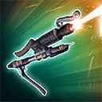
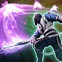

Zeb Orrelios (New Republic Pilot)
A veteran warrior that thrives in the thick of combat
A veteran warrior that thrives in the thick of combat

Deal Physical damage to target enemy and inflict Accuracy Down for 1 turn. If it's Zeb Orrelios (New Republic Pilot)'s turn and the target enemy already has Accuracy Down, Blind them for 1 turn instead.

Dispel all buffs on target enemy and inflict them with Protection Disruption and Vulnerable for 1 turn, which can't be evaded or resisted. Deal Physical damage to all enemies and Provoke them for 2 turns, which can't be dispelled.
Deal Physical damage to target enemy equal to 25% of their Max Health. Dispel all Taunt effects on all enemies and Zeb Taunts for 2 turns. If any Taunt effect was dispelled, Zeb's Taunt can't be dispelled. If the target ally is New Republic, they gain additional effects based on their role for 1 turn:
- Attacker: All New Republic allies gain Offense Up; enemies are inflicted with Offense Down
- Healer or Support: All New Republic allies gain Potency Up; enemies are inflicted with Potency Down
- Tank: All New Republic allies gain Defense Up; enemies are inflicted with Defense Down
Zeb Orrelios (New Republic Pilot) has 35% Evasion and gains 15% Critical Avoidance, and 5% Max Health and Max Protection for each New Republic ally. At the start of each encounter, Zeb Taunts for 2 turns and all New Republic allies gain Protection Up (25%) for the rest of battle, which can't be dispelled or prevented.
While Taunting, Zeb gains 30% Defense and 25% Tenacity. Each time a New Republic ally evades an attack, they inflict the attacking enemy with Accuracy Down for 1 turn. The first time Zeb Orrelios (New Republic Pilot) drops below 50% Health, he gains 3 stacks of Heal Over Time and Frenzy for 2 turns and all New Republic allies gain 30% Turn Meter.
Omicron Boost : While in 3v3 Grand Arenas: At the start of battle, Zeb Orrelios (New Republic Pilot) has 100% Evasion and he loses 5% each time he evades an attack until it reaches 35%, and all other New Republic allies gain Stealth for 1 turn.
If the ally in the Leader slot is Captain Carson Teva, and R5-D4 is an ally, Captain Carson Teva ignores Taunt for the rest of battle, and R5-D4's ability Bad Motivator starts off cooldown. While Stealthed, Captain Carson Teva gains 200% Critical Damage and 40% Defense Penetration.
All other New Republic allies gain 50% Critical Avoidance, Max Health, and Max Protection.
New Republic allies gain 50% Critical Chance, Critical Damage, and Offense until the end of battle.
Whenever Taunt is dispelled from Zeb, at the end of the turn, all other New Republic allies Stealth and gain Tenacity Up for 2 turns. Whenever Stealth is dispelled from other New Republic allies, at the end of the turn, they gain Foresight for 1 turn and Zeb Taunts for 1 turn. Whenever a New Republic ally attacks out of turn, they remove 15% Turn Meter from target enemy (excluding Galactic Legends).
While Zeb Orrelios (New Republic Pilot)'s not Taunting, all other New Republic allies gain 30% Defense and 25% Tenacity. Each time Zeb critically hits an enemy, they are inflicted with 1 stack of Armor Shred (max 5) until the end of battle. Each time a New Republic ally evades an attack, they recover 10% Health and Protection. The first time Zeb Orrelios (New Republic Pilot), Captain Carson Teva, and R5-D4 lose 50% of their Health, they gain Damage Immunity for 1 turn, which can't be dispelled or prevented.